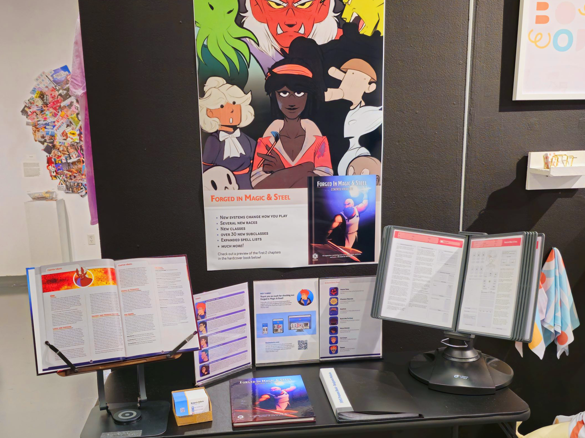

From Spring of 2023, the first concepts of what later would become the project “Forged in Magic & Steel” were made. It started as a collection of house rules for the tabletop game “Dungeons & Dragons”, to tweak the game in ways that are more enjoyable for my group. By the time winter came, the idea had expanded into a full expansion book, that is in the stil in the process of being created. I am working with a small team of wonderful people as their creative lead, and head of the project. That being said, I still handle all of the design, illustration, and much of the writing. The people I work with help with the creation of new ideas, brainstorming, playtesting, and editing the content we have made together. This project could not have been made without their contributions, and we will continue to work together until the book is a physical finished product people can use! ...
FiMS was the topic of my senior capstone at the College of Visual and Performing Arts at the University of Massachusetts Dartmouth — the goal of which was to make a working proof of concept that people could pick up and view. The sample at the show included what is now an older version of chapters 1 and 2, with a placeholder cover. As a result of having it on display, we had multiple groups of players approach with interest in the content. August of 2024 saw the release of our first private playtest, where some of these groups had the chance to test out our current draft of the book and provide feedback through a survey. The book has advanced further by having a new unique logo, new typefaces, brand new cover art, and new content for people to test. This project has been a great chance to really push myself as not just a designer, but as a creative. I’ve had the opportunity to lead a project, to write and create new content for a game I love, and to create designs and artwork in ways I had not done before. Our group met almost every Thursday during the course of my spring semester, either brainstorming, writing, or playtesting. The designs seen within our sample went through a few alterations, based on my own tweaks and the feedback from peers and visiting professionals alike. From the start I wanted to do something simple, yet elegant. I also tried to kept a similar style inspired by the handbooks made official for D&D 5th edition, with my own creative liberties.
On the design front, we needed to ensure we had the licensing of the fonts we used (if needed at all). Relying on keeping a subscription at all times did not seem ideal, so we intend on getting a lifetime license to one of our fonts. The rest have been changed to open-source typefaces, which work even better with the style we had developed for the book over the course of the last 6 months. On the writing side, our group had to follow the SRD (System Rulebook Documents) for D&D 5e. What this meant for us is that we could only reference content from those documents. So later additions like the artificer class, or more unique creatures like the beholder, were completely off the table for us. While we had a lot of completely original content for the book, there was some that built upon concepts from the game. Our subclasses couldn’t use spells from other expansions, nor could we make anything for a class like the artificer. Despite the restrictions we were able to present a sample book that was able to catch the intrigue of many people, which made all the work worth it. There is much more to be done with Forged in Magic & Steel, and this portfolio page will be updated as we hit important milestones. I am excited to continue sharing it, and I hope to one day present the final product here. It is very likely I won't show certain updates here until they are more concrete or until the book is complete. I would be more than happy to share progress if inquired.